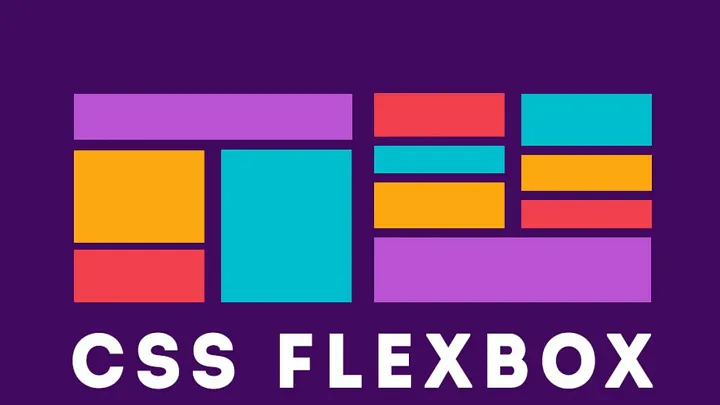
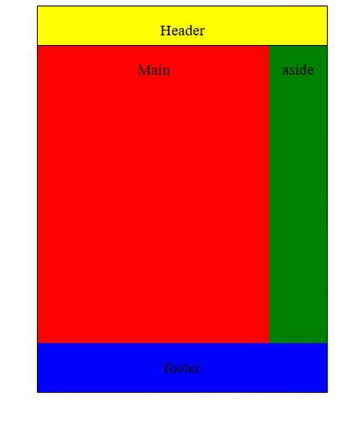

Układy stron
Każda strona powinna posiadać swój układ, nagłówek, stopkę część główną. W tym artykule dowiesz się jakie układy są najpopularniejsze i jak wykonać je używając flexboxa.
Spis treści
Czym jest układ strony?
Układ strony służy organizacji elementów na stronie internetowej. Ukłąd zapewnia, że widok jest uporządkowany, a doświadczenia z zarządzania stroną dużo przyjemniejsze. Dobrze zaprojektowany układ ułatwia nawigację użytkownikom, pomaga w skupieniu uwagi na najważniejszych treściach oraz zwiększa czytelność. Dzięki układom stron można łatwiej dostosowywać wygląd witryny do różnych urządzeń, co jest kluczowe w responsywności strony. Wpływa również pozytywnie na optymalizację SEO, umożliwiając lepsze indeksowanie przez wyszukiwarki internetowe.
Typy uładów stron
Układ składa się z kilku części. Layout zawierające wszystkie z nich wygląda tak:
Najpoluraniejsze jest 6 układów stron:
- brak układu - main
- header && main
- header && main && footer
- header && main && aside
- header && main && aside && footer
- header && main && aside && right aside && footer
Dlaczego flexbox
Flexbox zapewnia maksymalną responsywność, a także łatwość w pozycjonowaniu elementów strony, oczywiście są też inne
sposoby tworzenia układów ale dziś zdecydowanie rzadziej stosowane ze względu na brak ich responsywności. Drugim najpopularniejszym sposobem jest grid.
Główne założenia flexboxa to:
Elastyczność: Flexbox umożliwia dynamiczne dostosowywanie się elementów do różnych rozmiarów ekranów oraz ilości dostępnej przestrzeni.
Kontrola nad układem: Pozwala na łatwe definiowanie kolejności, porządku, rozmieszczenia i wyrównania elementów w kontenerze.
Jeden wymiar: Flexbox działa w jednym wymiarze, co ułatwia zarządzanie układem elementów wzdłuż osi głównej (np. poziomo lub pionowo).
Elastyczne przestrzenie: Flexbox oferuje elastyczne metody zarządzania przestrzenią między elementami, dzięki czemu można łatwo kontrolować odstępy i wyrównanie.
Automatyczne dopasowywanie: Flexbox automatycznie dopasowuje się do rozmiaru elementów i dostępnej przestrzeni, co znacznie ułatwia responsywne projektowanie stron internetowych.
Domyślną osią flexboxa jest oś pozioma, co powoduje że elementy ustawiają się wzdłuż tej osi. Można zmienić to zachowanie za pomocą css właściwości flex-direction. Aby element był uznawany jako flex ustawiamy właściwość display na flex.
Oto najważniejsze właściwości flex:
.element{
display: flex;
flex-direction: row; /* domyślna wartość, określa główną oś flex*/
flex-wrap: wrap; /*Określa czy elementy powinny się zawijać, dostepne wartości to wrap i nowrap*/
justify-content: flex-start; /* określa pozycjonowanie elementu, w tym wypadku wszystkie elementu będą na początku kontenera*/
align-items: center; /* określa pozycjonowanie elementu według drugorzędnej osi, w tym wypadku wszystkie elementu będą w centrum kontenera*/
flex-flow: row flex-start; /*Połączenie właściwości justify-content i flex-direction*/
align-content: flex-end; /* służy do pozycjonowania osi flex w przypadku zawijania*/
}
A oto najważniejsze rzeczy o osiach display flex na jedym zdjęciu:
https://www.alibabacloud.com/blog/details-on-flexbox-layout_598139
Najpopularniejsze układy tutorial
Pominiemy wykonanie pierwszego układu - bez układu.
Drugi układ to: header && main, a robi się go tak:
<div class="wrapper">
<header> <p>Header</p> </header>
<main> <p>Main</p></main>
</div> .wrapper{ /*wrapper to miejsce przeznaczone na układ*/
width: 300px; /*szerokość układu*/
height: 400px;/*wysokość układu*/
border: 1px solid black; /*granica która ma 1px szerokości jest stałą linią i jest czarna*/
margin: 0 auto; /*środkowanie układu*/
display:flex;
flex-direction: column; /*zmiana głównej osi flex na pionową*/
}
header{
border-bottom:1px solid black;/*dolna granica*/
background-color: yellow;/*kolor tła*/
height: 110px;/*wysokość elementu*/
}
main{
background: red;
height: 100%;
}
p{
text-align: center;/*centrowanie textu*/
}Efekt:
Trzeci układ to: header && main && footer, a robi się go tak:
<div class="wrapper">
<header> <p>Header</p> </header>
<main> <p>Main</p></main>
<footer><p>footer</p></footer>
</div>.wrapper{
width: 300px;
height: 400px;
border: 1px solid black;
margin: 0 auto;
display:flex;
flex-direction: column;
}
header{
border-bottom:1px solid black;
background-color: yellow;
height: 10%;
}
main{
background: red;
height: 80%;
}
footer{
background: green;
height: 10%; /* wysokość to 10% .wrapper*/
}
p{
text-align: center;
}
Jak widać zmian prawie nie ma. Dodajemy footer, i tyle.
Efekt:
Czwarty układ to: header && main && aside, a robi się go tak:
<div class="wrapper">
<header> <p>Header</p> </header>
<div class="row-wrapper"> <!--dodajemy pojemnik, aby ustawić na nim display flex, co ustawi elementy w poziomie-->
<main> <p>Main</p></main>
<aside><p>aside</p></aside>
</div>
</div>.wrapper{
width: 300px;
height: 400px;
border: 1px solid black;
margin: 0 auto;
display:flex;
flex-direction: column;
}
header{
border-bottom:1px solid black;
background-color: yellow;
height: 10%;
}
.row-wrapper{
display:flex; /* ustawia elementy w poziomie*/
height: 100%;/*wypełnienie dostępnej przestrzeni w poziomie i pionie*/
width: 100%;
}
main{
background: red;
flex-grow: 1; /*pozwalamy elementowi zając całą dostępną przestrzeń (flex zajmuje na początku najmniejszą możliwą)*/
width: 80%
}
aside{
background: green;
flex-grow: 1;
width: 20%;
}
p{
text-align: center;
}
Efekt:
Piąty układ to: header && main && aside && footer, pominiemy go ponieważ wystarczy dodać w html coś takiego:
<footer> <p> footer</p> </footer> <!--po tagu zamykającym row-wrapper-->Efekt:
Szósty układ to header && aside && main && aside && footer, a robi się go tak
<div class="wrapper">
<header> <p>Header</p> </header>
<div class="row-wrapper">
<div class="left-aside"> <p>left aside</p> </div>
<main> <p>Main</p></main>
<aside><p>aside</p></aside>
</div>
<footer> <p> footer</p> </footer>
</div>.wrapper{
width: 300px;
height: 400px;
border: 1px solid black;
margin: 0 auto;
display:flex;
flex-direction: column;
}
header{
border-bottom:1px solid black;
background-color: yellow;
height: 10%;
}
.row-wrapper{
display:flex;
height: 100%;
width: 100%;
}
main{
background: red;
flex-grow: 1;
width: 80%
}
aside{
background: green;
flex-grow: 1;
width: 20%;
}
p{
text-align: center;
}
footer{
background: blue;
}
.left-aside{
background: orange;
}Efekt:
Po przeczytaniu tego artykułu potrafisz już stworzyć najpopularniejsze układy w html!